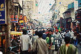

19/10/2000
You are here: Home > Travelogues > India 2000 > 19/10/2000Another quick update from the land of rupees...
Been in Delhi now for 4 days, will be leaving today, going up north to Dahramsala (sp?), which I'm really looking forward to. Delhi has been interesting, but it's very polluted, and rather crowded as well.
A few funny stories... People here want to sell you anything and everything. Went in to the city centre the other day, and we were practically hassled non stop. I could have had my ears cleaned, but I opted out of that one, even though the guy had a book full of testimonials (which he obviously insisted people write after he had worked his magic). Not sure if he tore out the bad ones. I acutally thought his book said 'car cleaning' at first...
Jana gave in and had her shoes shined, as they really needed it and we figured that the shoeshine guys wouldn't ever leave us alone if she didn't. It's funny, lots of people recognise the shoes (Blundstones) as Australian, even here.
Have also been offered various hankies, drums, flutes, belts, blocks of hashish, free maps (just come visit my friend's travel shop!), etc...
The written word over here is also frequently amusing... some examples:
'Bargain cum Sale'
'Please keep foot donw - thank you darlinig' (in an auto-rickshaw, which is
like cross between a moped and a Trabant, in which you can have good travel
for a small fee, plus the excitement of nearly running into things every 5
seconds - mind you they seem do drive pretty damn well given the
circumstances, so mum you can calm down now :))
'Egg Scumbled'
'Scumbled Egg' - both from our hotel's menu. Never did find out what the
difference is. They were different prices however.
Also from the menu: various things with "chilly", "pan cakes", "cheese omelate", "ice pot" (some sort of cold drink), various "sandwitches", plus a few others that I can't remember.
Anyway I'm having a ball, and pitying those of you in your fun jobs. Sorry, couldn't resist... :)
All images in this gallery:
|  F1000006.JPG 127.98 KB |
{kind=link}